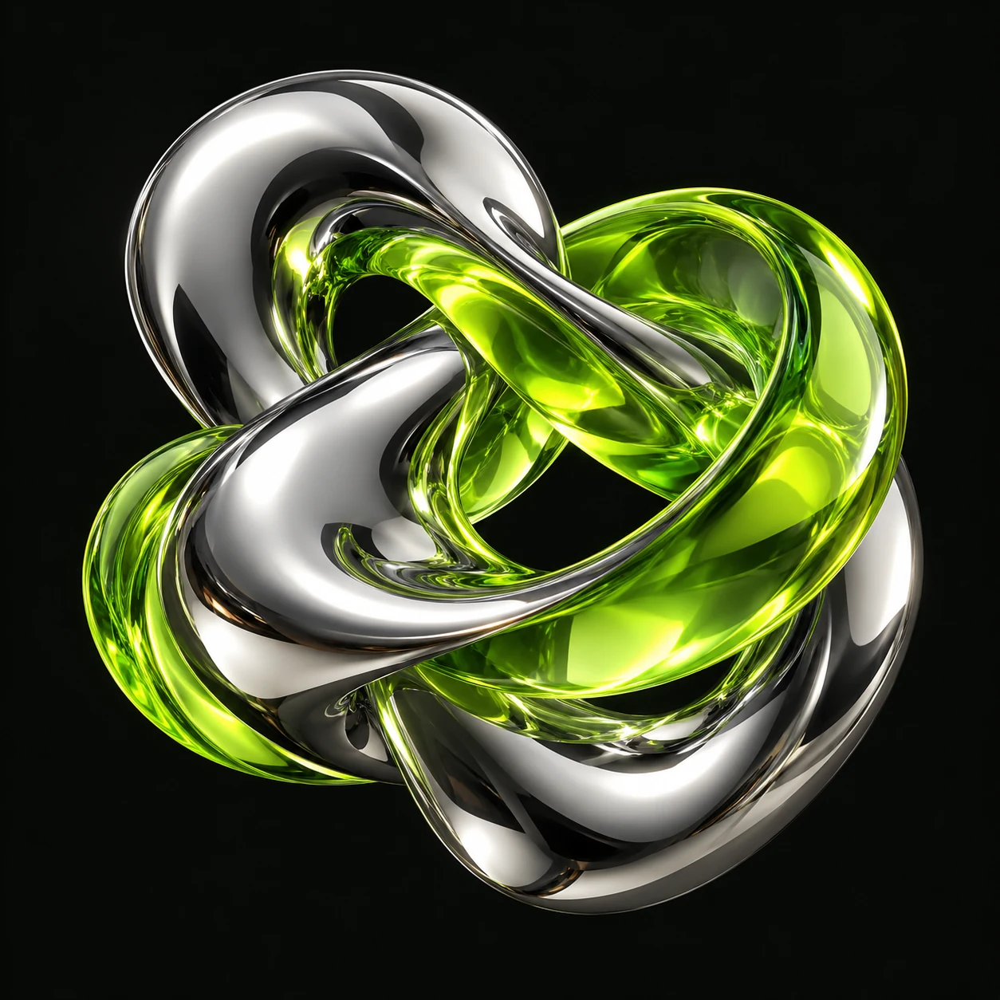

Start with why.
Understand the problem before choosing the technology.
We turn ambitious ideas into intelligent systems. AI agents, remarkable software, and a new way to move your business forward.

V / 001We connect human creativity with machine intelligence to solve what comes next.
Discover our capabilities ↗Purpose-built agents that reason, collaborate, and turn complex tasks into clear outcomes.
Explore capability ↗02 / SOFTWARE{ }Thoughtful digital products with intelligence built into their core, not bolted on later.
Explore capability ↗03 / VISION◎Turn visual signals into actionable insights with computer vision at the edge.
Explore capability ↗
A little input. A whole lot of possibility.
Pick a mission. Put
your judgment in the loop.
Interactive simulation · no live AI calls
Approve the simulated output or send the agents back for another pass.
Technology is only as good as the thinking behind it. We bring the curiosity, the craft, and the people who know when to ask a better question.
Meet the mindset ↗Understand the problem before choosing the technology.
Working prototypes. Honest feedback. Shared progress.
Human checkpoints, clear decisions, responsible systems.
With your challenge. Map the workflow, define one useful outcome, and prototype the smallest system that can prove it.
Integration starts with your APIs, data sources, and security requirements. We design around your environment.
Review points and escalation rules are defined before automation. Sensitive decisions require explicit approval and traceable logs.
No. It is a deterministic browser simulation. No prompts or data are sent to an AI provider.
From the first “what if” to the thing you can’t work without.
Strategy → Systems → Scale